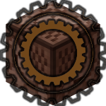

将Midi等转化为播放速率为20t/s的命令方块流。
简介
Audio2Minecraft是一款红石音乐转化器，能将midi转化为播放速率为20t/s的命令方块流。支持导入.mid、.wav、.lrc文件，并分别以playsound、scoreboard、tellraw/title的命令形式在Minecraft中输出。
A2M致力于简化红石音乐的制作过程，但并不是完全替代红石音乐的制作。A2M并不是刻板地转化文件，用户还需要通过对多个属性的设置，让用户能按照意愿输出令人满意的红石音乐。这些设置基本涵盖了所有可调试内容，以满足用户需求。

不同于NoteBlockStudio(NBS)，A2M仅是一款转化器，没有编曲功能。但相比于NBS导出的播放速率为10t/s的红石流，A2M的输出要精确得多。NBS以音符盒作为播放源，而A2M则以playsound命令作为播放源，不仅支持原版音色，还支持各种资源包。基于命令方块后，A2M还能将波形同步映射至计分板上，将歌词同步在聊天栏输出。
Audio2Minecraft已开源。正式版已发布(A-1.4)，最新快照(Snap-A-1.4)。
A2M — 主程序 & 类库
 Audio2Minecraft-UI
Audio2Minecraft-UI
Audio2Minecraft的图形化处理程序，以用户控件的形式对Midi，Wav和Lrc的操作，进行红石音乐的快速制作。目前为正式版(A-1.4)。
如果您是对Minecraft地图制作和数字音乐较熟悉的老手，可以直接参考索引中的教程；若是数字音乐入门甚至零基础、或者对Minecraft地图制作较不熟悉的新手，推荐加入A2M反馈交流群(本页最下方可查看群号)学习交流。
Audio2Minecraft.dll
Audio2Minecraft的类库，基于NAudio和FNbt，可供开发人员使用。目前为正式版(A-1.4)，在A2M的"dll"文件夹下。
相比于A2MUI，A2M.dll的优势在于无限制，您可以通过代码随心所欲地设置属性，按照您的想法增减序列，在输出的命令方块流中加入任何内容，做到更高级的效果。
请点击左上角的打开索引。
MineAudio — 辅助型扩展程序集
ExecutiveMidi
根据表达式将Midi转为命令
A2M的扩展程序，能将Midi中的值继承给运算表达式，并作为命令输出为命令流。允许导出amextension(A2M扩展内容)、emproj(EMidi工程文件)、schematic。
附
资源包推荐
A2M当然支持原版的音符盒音色，但为了更优的听觉体验，您可以使用资源包音色制作红石音乐。
反馈
在以下的链接中您可以联系到我，反馈任何疑问、Bug、特性。
想要更深入了解A2M请加入“A2M反馈交流群(595642695)”